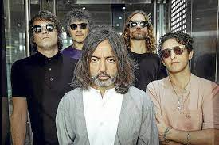

Conciertos y Shows
fechas y artistas para este 2024

BLACK PUMAS llega el 15 mayo de este 2024 para dar un concierto en el teatro caupolican.
Cuando Black Pumas lanzó su álbum homónimo en 2019, el dúo originario de Austin desató una reacción tan combustible y extasiante como su música misma.Con siete nominaciones al Grammy (incluyendo Álbum del Año) y elogios de destacadas publicaciones como Pitchfork y Rolling Stone, Eric Burton y Adrian Quesada lograron un enorme éxito como acto en vivo, recorriendo grandes teatros en Europa y América del Norte y del Sur, ofreciendo un espectáculo trascendental que Burton describe acertadamente como "iglesia eléctrica". Mientras trabajan en su muy esperado segundo álbum, la banda amplió su paleta para incluir una deslumbrante variedad de formas musicales: híbridos celestiales de soul y pop sinfónico, excursiones alucinantes en el jazz-funk y psicodelia, canciones de amor soñadoras que parecen caer desde el cosmos. Más salvaje, extraño y extravagante que su predecesor, Chronicles of a Diamond -lanzado en octubre del 2023- se presenta como la expresión más completa hasta ahora de la frenética creatividad y visión ilimitada de Black Pumas. Esto más todos sus éxitos en vivo y en directo este 16 de mayo en el mítico Teatro Caupolicán.
Ysy A llega este 16 de mayo al movistar arena para dar unos de los mejos shows de los ultimos tiempos en la Escena Urbana.
YSY A sigue expandiendo los límites de un sonido en constante mutación, sorprendiendo con sus siete discos de estudio. Respetando las raíces del trap, la versátil discografía de YSY A plantea un intenso recorrido por su experiencia en las calles de Buenos Aires; una que condensa y redefine por completo al trap argentino e invita a conocer su complejo laboratorio sonoro.Hoy continúa escribiendo la historia de la nueva música argentina con ‘EL AFTER DEL AFTER’, otro trabajo que cambia las reglas del juego. Este disco encuentra a YSY A navegando por los caminos de la música electrónica, dejando en claro una vez más que su esencia es la constante experimentación conceptual y sonora. Así los singles ‘24/7 6.5’ con Jere Klein; ‘Nada Más’ con Duki y Yesan, ‘Lugares que Llego’ con Quevedo, dominan las escuchas en las plataformas.YSY A marcó un antes y un después con su disco ‘YSYSMO’, girando conceptualmente alrededor de su capacidad para hacer temblar todo durante sus shows. YSYSMO le dio vida a una nueva gira nacional e internacional sin precedentes por España, Inglaterra, Colombia, Uruguay, Chile, México, Paraguay y Dinamarca. Para terminar el 2023 y celebrar su nuevo álbum EL AFTER DEL AFTER, se presentó ante 45 mil personas en el mítico Estadio de Huracán. Alejo pasó de crear y organizar El Quinto Escalón en el Parque Rivadavia, competencia donde se popularizaron y sirvió de trampolín para grandes artistas de la escena argentina, a llenar venues y estadios en todo el mundo. De soñar con ser un rapero consagrado a que sea una satisfactoria realidad.
INTERPOL llega este 30 de mayo para dar su concierto en el Teatro Municipal de Viña del Mar para despues terminar su tour por chile en el Teatro Caupolican el 31 de mayo
Con más de 25 años de carrera sus canciones siguen como siempre, golpeando fuerte e Interpol sigue como estandarte del movimiento revival post punk de los años 2000 hasta hoy. Sus numerosas obras maestras hacen de la banda un indispensable con una legión de seguidores en todo el mundo.Hoy, el venerado grupo de rock neoyorquino anuncia su nueva gira que traerá a los fanáticos no sólo su presencia magnética, también la celebración de parte de su catálogo esencial:Turn On The Bright Lights y Antics en 2004 que interpretarán el próximo 31 de mayo en Teatro Caupolicán.De estas placas se desprenden aclamados himnos. “Turn on the Bright Lights” en 2002 fue el espectacular debut de Interpol y lo situó en las grandes ligas del rock. De este álbum figuran “PDA”, “Obstacle 1”, “Untitled”, “Stella Was a Diver And She Was Always Down”, “Leif Erikson”.Dos años después, considerada como una de las mejores entregas de los neoyorquinos, “Antics” marcaría la ruta de la banda de fama y éxito mundial. De este disco se desprenden grandes sencillos como “Slow Hands”, “C’mere”, “Take you on a cruise”, “Narc” o “Evil”.Con su show en vivo descrito como una “experiencia trascendente”, también presentarán la música de su séptimo álbum de estudio, The Other Side of Make-Believe que marca una nueva frontera para Interpol, explorando las siniestras corrientes subterráneas de la vida moderna,mientras que sus nuevas canciones también tienen una sensación idílica, llena de aspiraciones y nuevos descubrimientos.Interpol comenzó en Nueva York en 1997, cuando el guitarrista Daniel Kessler reclutó al bajista Carlos Dengler y al cantante y guitarrista Paul Banks para formar una banda.En 2002, con Sam Fogarino a la batería, la banda firmó con Matador Records y lanzó un álbum que llegó a la décima posición en la lista de NME de los mejores lanzamientos de 2002 y Pitchfork lo nombró el álbum número uno del año. Durante la siguiente década y media, Interpol obtendría una gran aclamación comercial y de la crítica,con cinco récords posteriores en las listas altas del Billboard 200; obteniendo excelentes críticas en todo el mapa, desde Rolling Stone hasta TIME; actuando en programas de televisión nocturnos, incluido The Late Show con David Letterman y Conan, y tocando en festivales importantes como Coachella, Lollapalooza y Glastonbury.
EASYKID dara su show este 2 de julio en el Teatro Caupolican con todos sus exitos y su ultima discografia
Desde el lanzamiento de su álbum “Sorry, estoy en mi darkera” en julio del año pasado, y el exitoso EP “Días antes de la Darkera”, Easykid ha tenido un exitoso año lleno de conciertos y un crecimiento musical que ha cruzado fronteras. En sus numerosos conciertos en regiones, ha ido contando a sus fans que se viene un anuncio importante, su primer concierto de larga duración en solitario, en el tan esperado Teatro Caupolicán el próximo 2 de junio.“Este último año ha sido muy lindo, he podido compartir mi música por muchas ciudades de Chile, y eso me pone muy contento, ver como crece el culto aquí y en todo el mundo.Este concierto lo estamos esperando hace tiempo y ver que al fin se concreta a mí y a mi equipo nos tiene muy contentos y trabajando mucho”. En los últimos años, Easykid se ha alzado como una joven promesa del género urbano chileno con bullados lanzamientos como su EP “Visionari” (2019) y su disco debut “+Xqa” (2021). Su presente es con su segundo álbum de estudio “Sorry, estoy en mi darkera”, trabajo donde el cantante urbano invitó a distintos proyectos musicales a unirse a su Darkera, como “Coketa” ft el puertorriqueño Kris Floyd y su colega antogafastino Nyruz;“Cristina” junto a Kidd Voodoo; “Baby tk” con la participación del dúo indie venezolano Lara Project; “La Tsuru” con el artista mexicano Zizzy y “Antibellakera” en un esperado remix con DrefQuila.El artista luego de tener una gira de más de 20 shows en distintas regiones del país, estará en la versión de este año de Lollapalooza Chile, show muy esperado también para Easykid.“Lollapalooza siempre para mí fue uno de mis más grandes sueños, y tenerlo tan cerca me hace tener mucha motivación y de seguir creando mi música para que el culto siga creciendo, agradezco siempre a todos los que me siguen, desde el principio o también a los que se han sumado este último tiempo,verlos cantar en los shows me emociona mucho, y creo que Lollapalooza será un hito muy importantes luego el show del Caupolicán que viene con muchas sorpresas”.
BABASONICOS llega a dar su sorprendente show este 8 de junio en el Teatro Caupolican con todos sus existos y sus ultimos proyectos
Una nueva página en la historia de la banda y Chile. Un concierto único, imponente y como siempre sucede con Babasonicos, sublime. Santiago, martes 23 de enero de 2024.- La rica historia de tres décadas sobrecargadas de grandes éxitos y su propuesta sonora, regresan debutando en Movistar Arena el próximo 8 de junio. Con un show único, imponente, los Babasonicos continúan transformando cada paso en un suceso. El espectáculo recorrerá desde su último lanzamiento hasta muchas de sus composiciones más celebradas de álbumes anteriores. El álbum Trinchera Avanzada (2022) -la versión extendida de “Trinchera” que suma tres nuevas canciones- resultó ser uno de los discos más nominados del año en los Premios Gardel 2023. El grupo ganó en “Mejor Álbum de Rock Alternativo” y quedó en las nominaciones de “Álbum del Año”, “Canción del Año” con “Bye Bye”, “Mejor Diseño de Portada” y “Productor del Año” (con Gustavo Iglesias). Formada en 1991 en Buenos Aires,emergió como una fuerza a tener en cuenta, impulsando fronteras y redefiniendo géneros con su innovadora fusión de rock, pop y sonidos experimentales que ha cautivado a audiencias de todo el mundo explorando nuevos territorios sonoros y consolidando su estatus como pioneros del movimiento de rock alternativo argentino. Su música evolucionó, incorporando elementos de la música electrónica y experimentando con diferentes estilos, lo que les valió la reputación de ser intrépidos e innovadores musicales. Luego de 13 discos oficiales editados y más de 23 años de giras constantes por toda Latinoamérica, la búsqueda continua.
RAWAYANA llega a dar su sorprendente show este jueves 27 de junio en el Movistar Arena con todos sus existos y sus ultimas novedades
En diciembre pasado la banda venezolana conquistó a más de 4 mil personas en un Teatro Caupolicán sold out. ¿Quién trae las cornetas? World Tour continúa sumando fechas y conquistando a miles de personas con su energía en el escenario, un imperdible para sus fanáticos. Reflejo de una fiesta eterna, mezcla lo mejor del reggae con el pop y los ritmos caribeños a través de un sonido fresco y letras poéticas, logrando como resultado el mejor de los deleites sonoros. Así es como regresan, luego de que conquistara a más de 4 mil personas en un Teatro Caupolicán sold out, para continuar la estrecha relación que se ha formado con Chile, esta vez en Movistar Arena el 27 de junio.Su último álbum, ¿Quién trae las Cornetas? Nuevamente vuelve a conectar de mano de singles como “Binikini” con Danny Ocean y “Dame Un Break” que figuran dentro de los éxitos más destacados de su carrera. También, “Bebé” y “Feriado”, y el más reciente “Get Down” con Bárbara Dozza, marcan una nueva etapa en la banda elevando no sólo el impacto con su nueva música, también con su capacidad para cautivar audiencias a nivel mundial. Originarios de Venezuela, RAWAYANA se ha convertido en una de las bandas alternativas más emocionantes de América Latina con su potente show en vivo y su distintiva fusión de ritmos caribeños con funk, soul, reggae y rock. Hasta la fecha, Rawayana ha lanzado cinco álbumes de estudio: Licencia Para Ser Libre (2011), Rawayanaland (2013). Trippy Caribbean (2016), Cuando Los Acéfalos Predominan (2021), y ¿Quién Trae Las Cornetas? (2023).La banda obtuvo una nominación a Mejor Artista Nuevo en la 18.a Entrega Anual del Latin GRAMMY después del lanzamiento de su tercer álbum Trippy Caribbean. También han tenido varias colaboraciones importantes con potencias de la industria como Danny Ocean, Natalia Lafourcade, Los Amigos Invisibles, Cultura Profética, Alvaro Diaz, Elena Rose, Akapella y más.En 2023, Rawayana inició la siguiente fase de su carrera lanzando prolíficamente nuevos sencillos durante todo el año. Varios de estos nuevos lanzamientos, incluidos “Binikini” (con Danny Ocean), “Dame Un Break” y Hora Loca (con Monsieur Periné) se han convertido en los sencillos de más rápido crecimiento de su carrera.